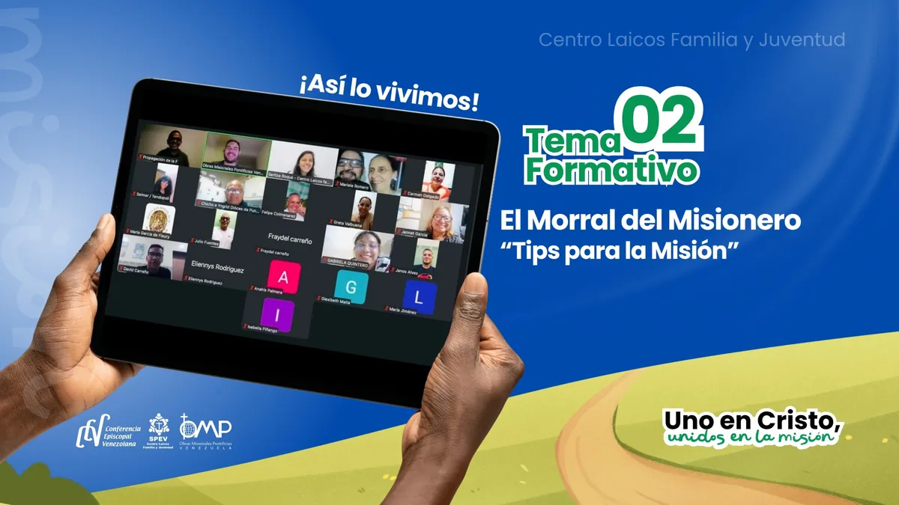

Formación misionera «Uno en Cristo, unidos en la misión»
Dos sesiones virtuales, el 11 y el 20 de marzo, para organizar y preparar a los misioneros de Semana Santa: «Organicemos una misión» y «El Morral del Misionero: Tips para la Misión».

Datos del evento
- Fecha
- Miércoles 11 y viernes 20 de marzo de 2026
- Modalidad y lugar
- Virtual · Virtual, por Zoom
- Organiza
- Centro de Laicos, Familia y Juventud, con las Obras Misionales Pontificias
- Estado
- Realizado
Cómo fue
El Centro y las Obras Misionales Pontificias organizaron las dos sesiones por Zoom. La directora del Centro dio la bienvenida. Un asesor del Centro de Formación Misionera de las OMP y el secretario nacional de la Pontificia Obra de la Propagación de la Fe guiaron el trabajo.
Los participantes recibieron un decálogo práctico y el «Carnet de Vacunación Espiritual». Trabajaron cuatro ejes: visibilización y comunión, formación y corresponsabilidad, acompañamiento integral, y articulación y relevo. Se les invitó a registrar los lugares de misión para armar un mapa nacional.
Qué se hizo
- Organizaron una misión, en la sesión del 11 de marzo.
- Prepararon «El Morral del Misionero», con consejos prácticos, en la sesión del 20 de marzo.
- Trabajaron los cuatro ejes: visibilización y comunión, formación y corresponsabilidad, acompañamiento integral, y articulación y relevo.
- Registraron lugares de misión para un mapa nacional.
Quién participó
- Saritza Roque, directora del Centro de Laicos, Familia y Juventud.
- Un asesor del Centro de Formación Misionera de las Obras Misionales Pontificias.
- El secretario nacional de la Pontificia Obra de la Propagación de la Fe.
Galería

Formación misionera «Uno en Cristo, unidos en la misión», Virtual, por Zoom, miércoles 11 y viernes 20 de marzo de 2026. Afiche de la formación «El Morral del Misionero: Tips para la Misión», tema 02. Crédito: CEV Medios, fuente: Centro de Laicos, Familia y Juventud.